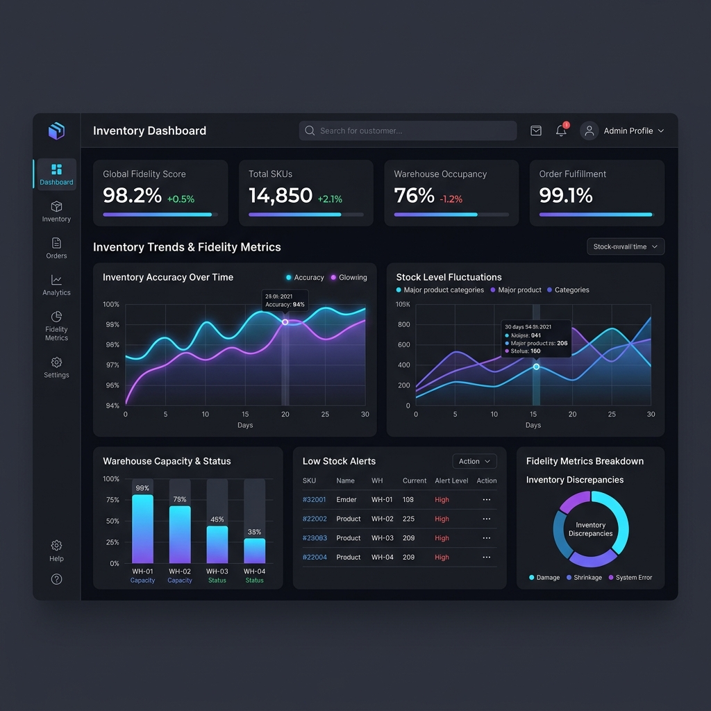
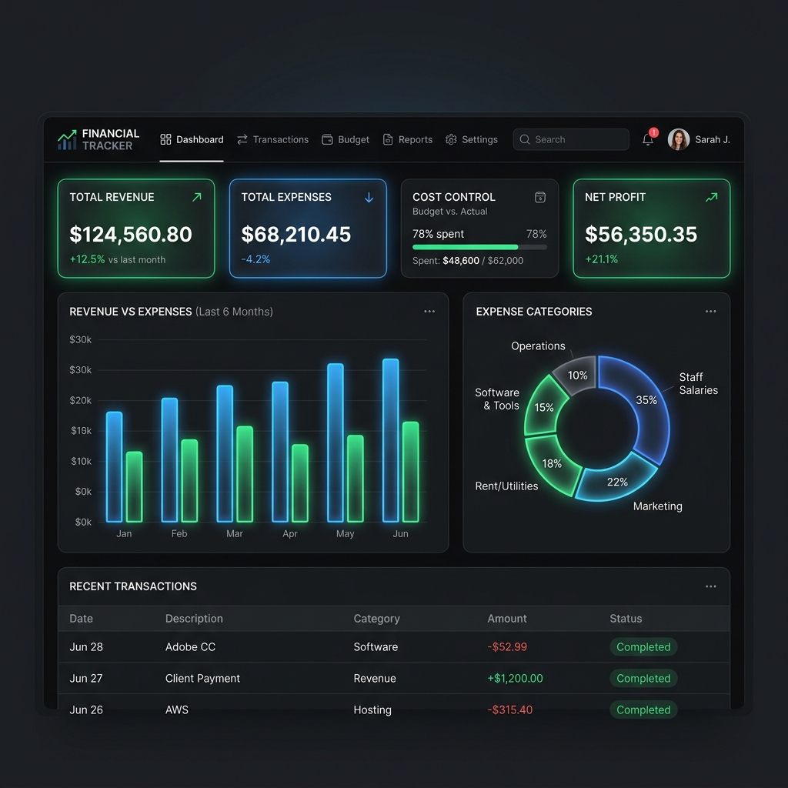
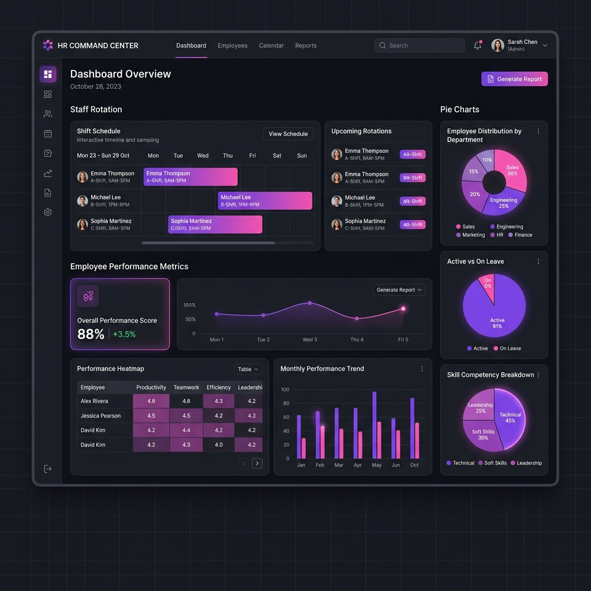

Hola, soy
Samir Vasquez
Gerente de Proyectos
Especialista en liderar y ejecutar proyectos estratégicos, optimizando procesos clave en Inventario, Sistemas TI y Evaluaciones del Desempeño. Enfocado en maximizar la eficiencia y alinear resultados con los objetivos de la empresa.
Sobre Mí
Como Gerente de Proyectos, mi propósito es transformar la complejidad en agilidad. Me especializo en liderar reestructuraciones de alto impacto donde el objetivo no es solo cumplir un cronograma, sino generar resultados tangibles en el menor tiempo posible. Mi enfoque combina la visión estratégica con una ejecución táctica implacable para optimizar el OPEX y maximizar el valor de cada recurso invertido.
Creo firmemente en la tecnología como un facilitador, por lo que me centro en simplificar el procesamiento de datos y modernizar infraestructuras TI para que la información fluya sin fricciones. He comprobado que la eficiencia operativa nace de la claridad: desde la gestión inteligente de inventarios hasta la eliminación de burocracia en los procesos.
Más allá de los sistemas, entiendo que el éxito de una empresa depende de su gente. Por eso, me apasiona detectar y potenciar el talento en áreas críticas, estructurando equipos de alto rendimiento que no solo alcancen las metas, sino que eleven el estándar de la organización. No solo gestiono proyectos; construyo los cimientos operativos para que las empresas escalen con orden y rentabilidad.
Experiencia
Completados
Experiencia
Gerente de Proyectos Inventario
Feb 2022 - Abr 2026 | Supermercados Luxor C.A.Lideré la reestructuración y optimización integral del departamento, logrando hitos operativos clave:
- Depuración del Maestro de Artículos: Reducción de 120.000 a 12.000 SKU productivos (simplificación al 10%), estandarizando fichas técnicas e imágenes.
- Control Operativo y KPIs: Determinación de mermas, tolerancias en recepciones y transferencias. Monitoreo de fidelidad de inventario, ajustes por devoluciones y alertas de stock negativo.
- Inventario Masivo: Diseño e implementación de un modelo de conteo físico "pared a pared" para auditorías integrales.
- Desarrollo de App: Creación de una aplicación para marcaje de precios en anaqueles con auditoría automática al detectar discrepancias (stock cero o negativo).
Gerente de Proyectos TI
Feb 2022 - Abr 2026 | Supermercados Luxor C.A.Dirección de proyectos de infraestructura y sistemas tecnológicos para todas las sucursales, asegurando la continuidad operativa y modernización de equipos.
Gerente de Proyecto Evaluaciones
Feb 2022 - Abr 2026 | Supermercados Luxor C.A.Desarrollo e implementación de sistemas de evaluación del desempeño para medir y mejorar la productividad del talento humano en la organización.
Líder de Proyectos
Feb 2022 - Abr 2026 | Supermercados Luxor C.A.Supervisión y ejecución de iniciativas estratégicas interdepartamentales, garantizando el cumplimiento de cronogramas y presupuestos.
Desarrollador de Software
Feb 2022 - Abr 2026 | Supermercados Luxor C.A.Diseño y programación de herramientas internas para automatizar procesos operativos y optimizar el flujo de información corporativa.
Monitorista de CCTV
Feb 2022 - Abr 2026 | Supermercados Luxor C.A.Vigilancia y monitoreo de los sistemas de seguridad físicos en las instalaciones para salvaguardar los activos de la empresa.
Proyectos Destacados
Sistemas TI: Modernización de Infraestructura
Infraestructura tecnológica obsoleta que causaba lentitud en los procesos internos y caídas del sistema durante picos de trabajo.
Actualizar los servidores y migrar los servicios críticos a la nube para garantizar un 99.9% de tiempo de actividad.
Liderazgo de un equipo de ingenieros en la migración de bases de datos a infraestructura en la nube. Implementación de nuevas políticas de seguridad y respaldos automatizados.
Reducción del 40% en costos de mantenimiento y mejora del 60% en la velocidad de respuesta del sistema corporativo.
Control de Inventario: Automatización WMS
Desfases de inventario del 15% mensual debido a conteos manuales y falta de trazabilidad en tiempo real en los almacenes.
Implementar un sistema de gestión de almacenes (WMS) automatizado e integrado con tecnología de escaneo móvil.
Coordinación integral para la integración del software WMS con el ERP corporativo. Diseño y ejecución del plan de capacitación para el personal logístico.
Discrepancias de inventario reducidas a menos del 1%, acelerando el proceso de despacho de mercancía en un 25% y eliminando cuellos de botella.
RRHH: Evaluación del Desempeño 360°
Ausencia de métricas objetivas para medir la productividad del personal, resultando en estancamiento y falta de reconocimiento.
Diseñar e implementar un sistema de evaluación de desempeño 360° alineado con los objetivos estratégicos de la empresa.
Trabajo colaborativo con dirección para definir KPIs por departamento. Despliegue de una plataforma digital para evaluación trimestral y feedback continuo.
Incremento del 30% en la satisfacción laboral, mejora en la retención de talento clave y detección temprana de necesidades de capacitación.
Análisis de Datos
Visualización interactiva y dashboards estratégicos creados para el monitoreo en tiempo real y la toma de decisiones basada en datos.



Fidelidad del Inventario
Monitoreo en tiempo real de entradas/salidas, métricas de precisión de stock y alertas automatizadas de quiebre.

Control de Costos y Gastos
Análisis financiero detallado para evaluar la rentabilidad del proyecto, márgenes operativos y optimización presupuestal.

Gestión del Talento
Métricas de desempeño, índices de rotación de personal y mapas de calor de productividad departamental.
Habilidades y Cursos
Gestión de Proyectos
Áreas de Especialidad
Cursos y Certificaciones
Ponte en Contacto
¿Tienes un proyecto en mente o simplemente quieres saludar? ¡Me encantaría hablar contigo!
Envíame un Email